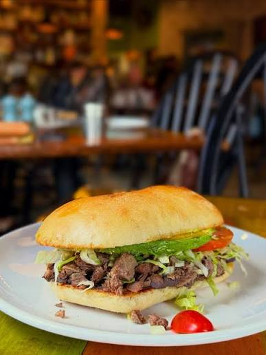

Home
Sandwich

Po' Boy Steak Sandwich: A classic New Orleans-style sandwich loaded with savory steak and your favorite toppings.
Ingredients:
- Ribeye steak
- Toasted bread
- Pickles
- Sliced tomatoes
- Toasted bread
Steps:
- Season the ribeye steak with salt and pepper. Let it sit at room temperature for approximately 15 minutes.
- Heat a skillet over medium-high heat. Cook the steak for about 3-4 minutes per side.
- Let the steak rest for about 5 minutes, then cut into thin slices.
- Toast the bread in the skillet until lightly golden and crisp.
- Layer the sliced steak onto the toasted bread. Add lettuce, sliced tomatoes, and pickles.
- Enjoy 😊.